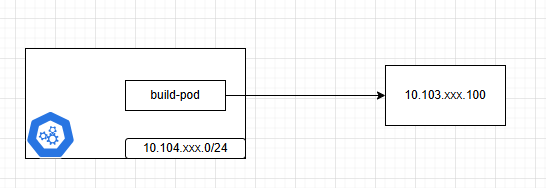
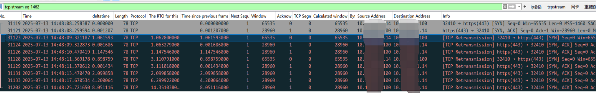
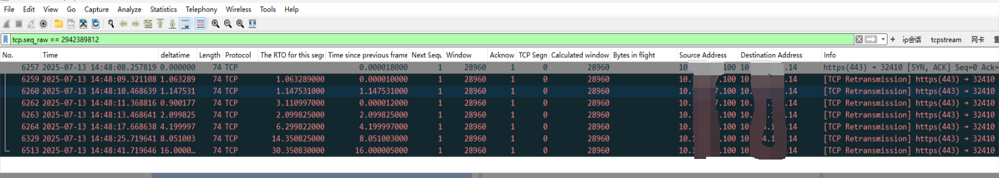
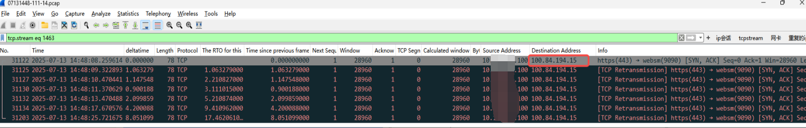
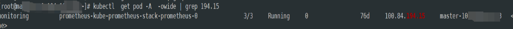
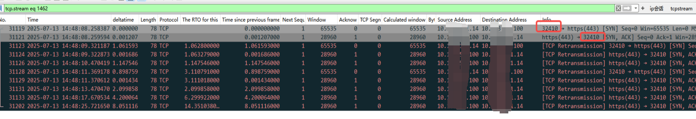
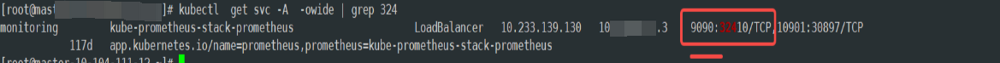
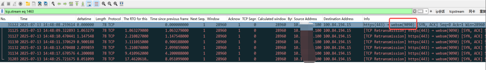
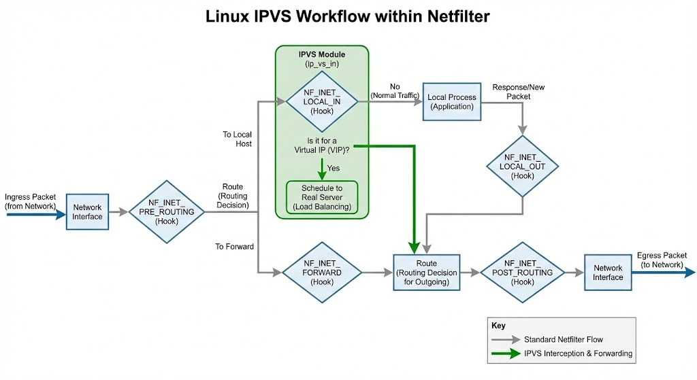

排障-syn-ack丢包问题排查
问题现象:
质效SAE构建集群docker push 有小概率丢包
dial tcp 10.xxx.xxx.100:443 connect: connection timed out 分析
背景
拉起的pod执行 docker login/push等操作会偶现超时，且docker是依赖宿主机docker
请求链路很简单如图

确认10.xxx.xxx.100 nginx下有没有收到请求
通过nginx日志排查，没有发现对应请求
10.xxx.xxx.100 有没有主动丢syn包
passive_connections_rejected_total 指标虚线看了没有
尝试重现
拉起pod模拟真实场景
核心逻辑尝试docker login , 如果login 日志有失败则 给i讯飞机器人发送消息提醒
# 2-deployment.yaml
apiVersion: apps/v1
kind: Deployment
metadata:
name: docker-login-loop
spec:
template:
spec:
nodeName: node-10.yyy.yyy.14
securityContext:
fsGroup: 1000
containers:
- name: docker-login-container
# Using a small image that includes the 'sh' shell
image: artifacts.xxxx.com/docker-repo/curlimages/curl:latest
command: ["/bin/sh", "-c"]
resources:
...
args:
- |
while true; do
timex=`date +"%Y-%m-%d %H:%M:%S"`
echo $timex
echo "Attempting docker login... ${timex}" >> /home/curl_user/x.log
echo $DOCKER_PASSWORD | /usr/bin/docker login -u $DOCKER_USERNAME --password-stdin artifacts.xxxx.com >> /home/curl_user/x.log 2>&1
echo "Login command finished. Waiting 5 seconds." >> /home/curl_user/x.log
tail -n 3 /home/curl_user/x.log | grep "timed out" && curl -X POST -H "Content-Type: application/json" -d '{"msg_type":"text","content":{"text":"capture packet drop - 抓包提醒无需关注 @shunzhou"}}' https://open.xfchat.xxxx.com/open-apis/bot/v2/hook/xxx-xxxx-xxx-xxxx-xxxxxx
sleep 5
done
env:
- ...
volumeMounts:
- name: docker-bin-volume
...
volumes:
- name: docker-bin-volume
...
- 同时在源端和对端做抓包, 因为流量较大需要滚动保留10个包
这里有个细节是因为pod是挂载了宿主机的/var/run/docker.sock 所以其实在pod容器内是抓不到包的。 直接在宿主机里抓即可
# 源端
tcpdump host 10.xxx.xxx.100 -s200 -W 10 -C 10 -w yyy.14.pcap &
# 目标端
tcpdump host 10.yyy.yyy.14 -s200 -W 10 -C 10 -w xxx.100.pcap &复现后分析
- 14的包

- 100的包 通过114收到的来自10.xxx.xxx.100的syn-ack的 seq来找到对应的

基于上面2个包能够确认是 10.xxx.xxx.100在收到yyy.14的syn包后，其实是有回包， 回包也被yyy.14的tcpdump收到 说明,yyy.14收到syn-ack后 没有对此做ack。10.xxx.xxx.100会持续发送syn-ack直到超时
抓到此包时，还给网络组发工单来协助排查， 其实这个问题应该先怀疑机器的问题。 但是网路组也给了一个思路，通过tcpping来看，是否能重现， 如果能重现排除应用侧的问题。但是其实此包基本能判断是包已经进入了机器，且tcp握手是linux内核的事了 ，跟应用层也没有关系
通过tcpping 来探测
while true; do
# Run tcping and capture its output to prevent it from printing to the console
tcping -t 5 10.xxx.xxx.100 443 > /dev/null 2>&1
# Check the exit code of the last command ($?)
if [ $? -ne 0 ]; then
# If the exit code is not 0 (i.e., it failed/timed out)
echo "Connection to 10.xxx.xxx.100:443 timed out at $(date)"
curl -X POST -H "Content-Type: application/json" -d '{"msg_type":"text","content":{"text":"capture packet drop - tcpping timeout @shunzhou"}}' https://open.xfchat.xxxx.com/open-apis/bot/v2/hook/xxxx-xxx-xxx-aa06-xxxxxx
else
# Optional: What to do on success
echo "Connection to 10.xxx.xxx.100:443 is successful."
fi
sleep 1
done部署后 也能偶现。 抓包，也是一样的现象 10.yyy.yyy.14收到10.xxx.xxx.100的syn-ack 后，并没有发送ack 回包。 至此再次确认了非docker应用导致丢包
10.xxx.xxx.100其实被多个网段请求。 对比其他验证
对比了
10.xxx.zzz.0/24(专属云集群) tcpping 没有问题
10.www.www.0/24 tcpping 也没有问题
再次验证是10.yyy.yyy.0/24 这个专属k8s集群的机器有关
意外发现
继续看抓包信息 无意间将 tcp.stream == 1463, 如下图，可以看到10.xxx.xxx.100 和 100.84.194.15 竟然发生交互了， 然后再次确认了下 seq numer也正是和 10.xxx.xxx.100发给10.yyy.yyy.14的syn-ack包。

我们看看这个ip是谁的?

是另外一个节点的promethues 的 pod ip ?? 为啥 ??
(这个时候如果对k8s比较熟练可能能找到原因。但是我并没有找到问题)
再理一理
- 10.yyy.yyy.14 - syn - 10.xxx.xxx.100
- 10.xxx.xxx.100 - syn-ack - 10.yyy.yyy.14
- 10.yyy.yyy.14 收到了包 -> tcpdump -> ipvs(netfilter) -> 应用层
这时候只有1个猜测：
- 既然tcpdump抓到此包，那么结合之前的网段的排除，可以怀疑k8s网络策略。
因为客户端应用发起连接之后，三次握手是发生在内核里。跟应用就没关系了。
找k8s集群维护方
这个专属集群是SAE帮忙建设的 , 摇到SAE网络专家浩哥帮忙分析，将抓到的包和异常情况同步后 , 大佬很快找到根因
来自浩哥的分析：
IPVS使用NF_INET_LOCAL_IN钩子点，位于INPUT链之后的 LOCAL_IN 路径上。在数据包即将交给本机传输层协议栈处理之前，IPVS 的钩子函数被调用，检查报文的目标 IP:Port 是否匹配k8s的service地址(VIP:VPort)。
如果匹配：根据调度算法从service关联的后端Pod中选择一个处理请求。
如果不匹配： 返回 NF_ACCEPT，数据包继续由本机协议栈处理。
本例中tcping的使用的随机端口与serivce nodeport重复，所以优先匹配了ipvs规则。
见下图 的连接 PORT: 32410 , 就和 prometheus的 NodePort 重复。 导致 10.xxx.xxx.100 的syn-ack 被转到了 prometheus pod 9090端口了 


这里找到这个异常包后当时只关注了那个ip, 如果关注下port，还是有一定概率可以找到nodeport 的问题
理解IPVS
k8s node port原理: 比如上面的prometheus node port 32410 创建后ipvs 会将访问32410端口的服务转到
pod ip
ipvsadm -L | grep 32410 -A 2
TCP node-10-yyy-yyy-14:32410 rr
-> 100.83.90.56:9090 Masq 1 0 0
-> 100.84.194.15:9090 Masq 1 0 0 如下图绿色部分
通过iptable debug也能看到被劫持的地方 ,就是像浩哥分析的在INPUT链之后
kernel: target in raw.prerouting>IN=bond0.111 OUT= MAC=80:61:5f:27:b7:dd:00:5e:ed:af:00:01:08:00 SRC=10.xxx.xx.100 DST=10.yyy.yyy.14 LEN=60 TOS=0x00 PREC=0x00 TTL=55 ID=4477 DF PROTO=TCP SPT=36766 DPT=32410 WINDOW=64240 RES=0x00 SYN URGP=0 ll-ipam-pools dst -j MASQUERADE
kernel: target in mangle.prerouting>IN=bond0.111 OUT= MAC=80:61:5f:27:b7:dd:00:5e:ed:af:00:01:08:00 SRC=10.xxx.xx.100 DST=10.yyy.yyy.14 LEN=60 TOS=0x00 PREC=0x00 TTL=55 ID=4477 DF PROTO=TCP SPT=36766 DPT=32410 WINDOW=64240 RES=0x00 SYN URGP=0
kernel: target in nat.prerouting>IN=bond0.111 OUT= MAC=80:61:5f:27:b7:dd:00:5e:ed:af:00:01:08:00 SRC=10.xxx.xx.100 DST=10.yyy.yyy.14 LEN=60 TOS=0x00 PREC=0x00 TTL=55 ID=4477 DF PROTO=TCP SPT=36766 DPT=32410 WINDOW=64240 RES=0x00 SYN URGP=0
kernel: target in mangle.input>IN=bond0.111 OUT= MAC=80:61:5f:27:b7:dd:00:5e:ed:af:00:01:08:00 SRC=10.xxx.xx.100 DST=10.yyy.yyy.14 LEN=60 TOS=0x00 PREC=0x00 TTL=55 ID=4477 DF PROTO=TCP SPT=36766 DPT=32410 WINDOW=64240 RES=0x00 SYN URGP=0 MARK=0x4000
kernel: target in filter.input>IN=bond0.111 OUT= MAC=80:61:5f:27:b7:dd:00:5e:ed:af:00:01:08:00 SRC=10.xxx.xx.100 DST=10.yyy.yyy.14 LEN=60 TOS=0x00 PREC=0x00 TTL=55 ID=4477 DF PROTO=TCP SPT=36766 DPT=32410 WINDOW=64240 RES=0x00 SYN URGP=0 MARK=0x4000
------------------------------- DNAT HAPPEN--------------------------------
kernel: target in raw.output>IN= OUT=bond0.111 SRC=10.xxx.xx.100 DST=100.84.194.15 LEN=60 TOS=0x00 PREC=0x00 TTL=54 ID=4477 DF PROTO=TCP SPT=36766 DPT=9090 WINDOW=64240 RES=0x00 SYN URGP=0 MARK=0x104000
kernel: target in mangle.output>IN= OUT=bond0.111 SRC=10.xxx.xx.100 DST=100.84.194.15 LEN=60 TOS=0x00 PREC=0x00 TTL=54 ID=4477 DF PROTO=TCP SPT=36766 DPT=9090 WINDOW=64240 RES=0x00 SYN URGP=0 MARK=0x104000
kernel: target in filter.output>IN= OUT=bond0.111 SRC=10.xxx.xx.100 DST=100.84.194.15 LEN=60 TOS=0x00 PREC=0x00 TTL=54 ID=4477 DF PROTO=TCP SPT=36766 DPT=9090 WINDOW=64240 RES=0x00 SYN URGP=0 MARK=0x104000
kernel: target in mangle.postrouting>IN= OUT=bond0.111 SRC=10.xxx.xx.100 DST=100.84.194.15 LEN=60 TOS=0x00 PREC=0x00 TTL=54 ID=4477 DF PROTO=TCP SPT=36766 DPT=9090 WINDOW=64240 RES=0x00 SYN URGP=0 MARK=0x4000
kernel: target in nat.postrouting>IN= OUT=bond0.111 SRC=10.xxx.xx.100 DST=100.84.194.15 LEN=60 TOS=0x00 PREC=0x00 TTL=54 ID=4477 DF PROTO=TCP SPT=36766 DPT=9090 WINDOW=64240 RES=0x00 SYN URGP=0 MARK=0x4000 
总结反思
整个排查花了挺长时间， 主要时间花在重现，抓包， 定界上面。
从这个排查 我们可以学到一些定界手段
- 通过通知+tcpdump 滚动抓包来解决流量过大，抓不到特定包的问题
- 抓到包后，基于包的分析大部分情况能够定大概范围， 网络问题， 机器问题，毕竟这个涉及到很多沟通成本
- 通过tcpping 脚本来排除应用的干扰，只关注tcp的握手，挥手